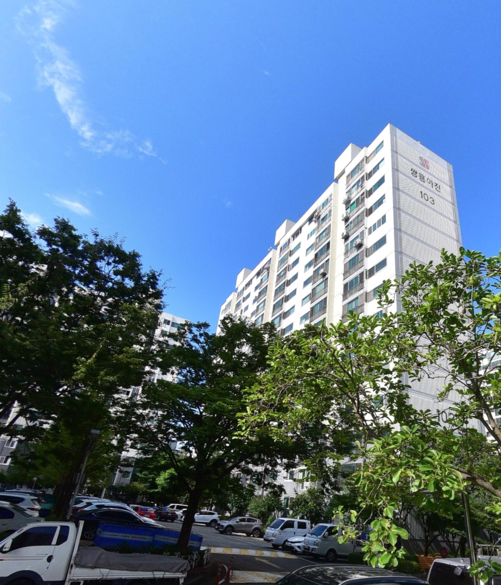
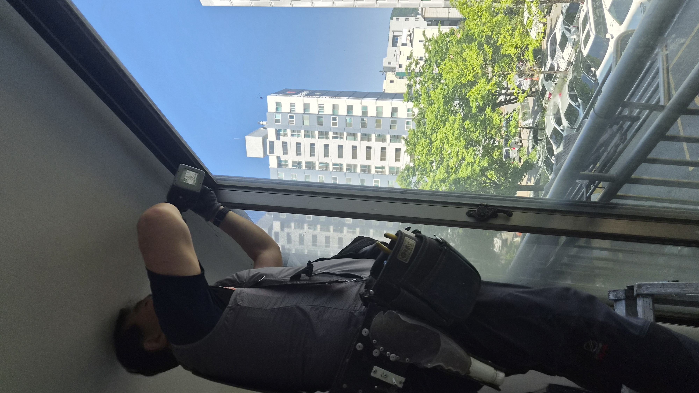
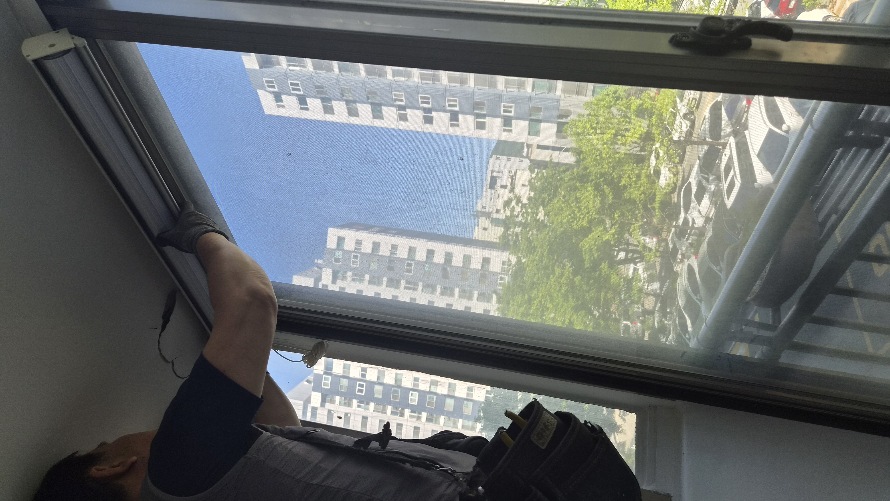
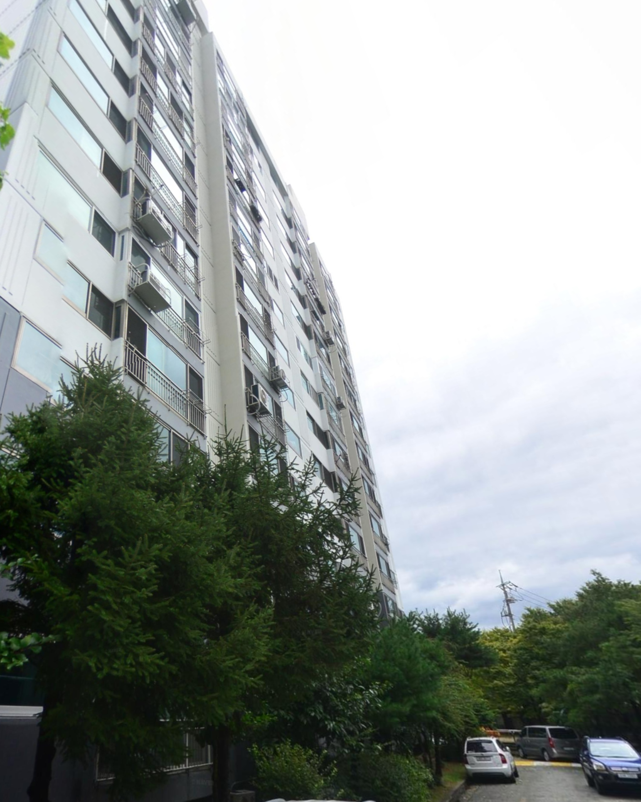
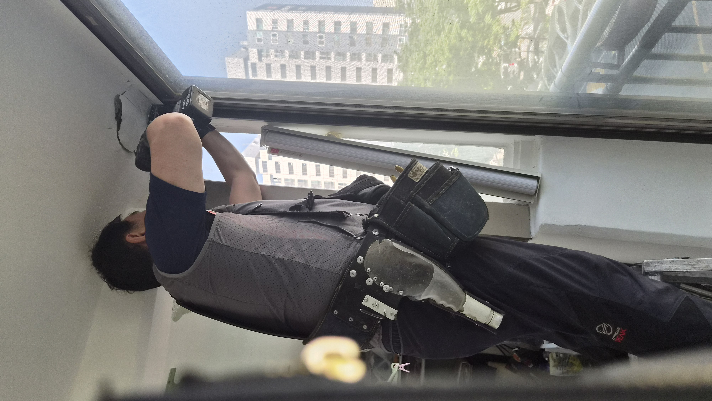
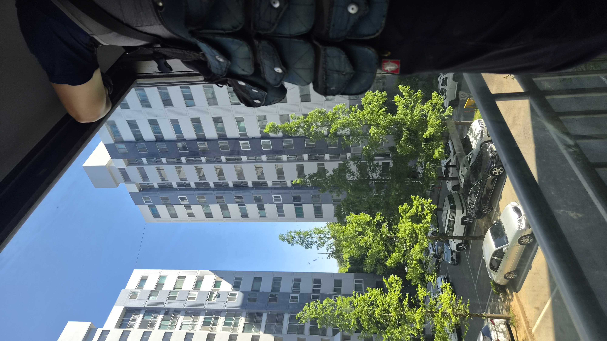
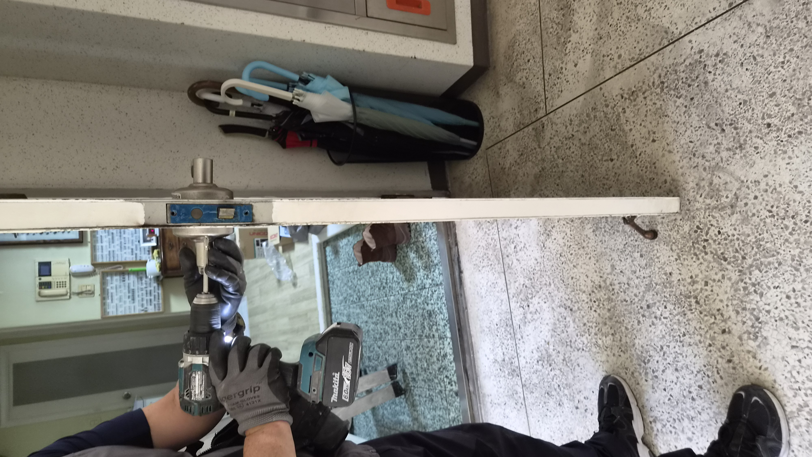

강한 햇빛이 들어오던 베란다를 먼저 살폈습니다
좋은 전망은 살리고, 눈부심은 줄이는 것이 이번 작업의 핵심이었습니다.
이번 현장은 울산 북구 상안동 쌍용아진1단지 아파트였습니다. 창밖 풍경이 참 좋고 채광도 뛰어난 집이었지만, 오후가 되면 햇빛이 강하게 들어와 베란다가 다소 허전하고 눈부셔 보이는 상황이었습니다.
고객님께서는 커튼을 먼저 떠올리셨지만, 현장을 함께 보니 무겁게 떨어지는 커튼보다 콤비 롤스크린이 공간과 더 잘 어울렸습니다. 시공 전에는 어떤 방식이 이 집의 분위기를 가장 편하게 만들어주는지부터 함께 판단했습니다.
콤비 롤스크린이 잘 맞는 집이 있습니다
이 집은 풍경이 살아 있는 대신 햇빛이 강한 편이라, 빛을 부드럽게 잡아주는 제품이 필요했습니다.
콤비 롤스크린은 원단이 겹치고 어긋나며 빛의 양을 조절할 수 있어, 블라인드처럼 실용적이면서도 롤스크린처럼 깔끔한 느낌을 줍니다.
생활 공간은 함께 봐야 더 편해집니다
롤스크린만 달고 끝내지 않았습니다. 시공 후 고객님이 매일 마주할 동선과 현관문 상태까지 함께 확인했습니다.
문이 뻑뻑하게 걸리고 소리가 난다고 하셔서, 방화문과 문틀 상태도 살펴본 뒤 미세하게 정리하고 도어락 교체 가능성까지 안내드렸습니다.
작업 순서
- 베란다 채광과 창문 방향 확인
- 가장 잘 맞는 원단과 폭 결정
- 콤비 롤스크린 설치
- 햇빛 차단과 개방감 균형 점검
- 현관문과 문틀 상태 추가 확인
현장 사진으로 보는 전후 흐름
작업 전에는 베란다 분위기가 다소 비어 보였고, 작업 후에는 풍경은 살고 햇빛은 한층 부드러워졌습니다.






현장 기록 이미지
시공 흐름이 한눈에 보이도록 대표 이미지를 정리했습니다.

작업 후 달라진 점
강한 햇빛이 부드럽게 걸러지면서 베란다 공간이 훨씬 안정감 있게 바뀌었습니다.
고객님께서는 창가가 훨씬 깔끔해졌고, 집 분위기가 한결 편안해졌다고 말씀하셨습니다.
또한 현관문의 뻑뻑함도 함께 정리해드려 생활 불편을 하나 더 줄일 수 있었습니다.
콤비 롤스크린은 단순히 햇빛을 막는 제품이 아니라, 집의 분위기를 정리하고 생활 만족도를 높여주는 실용적인 선택입니다. 비슷한 고민이 있으시면 사진 한 장만 보내주셔도 현장에 맞는 방향을 먼저 안내드릴 수 있습니다.
울산 베란다 롤스크린·생활집수리 상담
상안동, 매곡동, 호계동, 화봉동, 송정동, 신천동을 비롯한 울산 전 지역 생활 집수리와 인테리어 보수를 꼼꼼하게 도와드립니다.